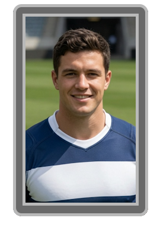
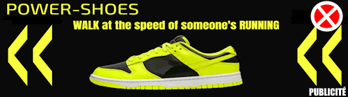

Dans sa jeunesse, Lucien, il était un fan de rugby passionné et profondément social, consacrant une grande partie de son temps à aprendre discipline et le respect.
À 12 ans, il rentre dans le centre de formation du Royal Valmont RC, un club de quatrième division française de Rugby.
À 14 ans, il vie la montée du club en troisième division, alors encore dans les tribunes.
À 16 ans, il est promu avec l'équipe première du Royal Valmont RC, il ne se fait pas encore une grande renommé mais pour un jeune, il gagne la promotion en seconde division avec son équipe.
À 17 ans, il devient titulaire indiscutable de l'équipe et obtiens une seconde promotion d'affilée, il est nommé meilleur joueur de seconde division, et file pour la première division embrassant l'emblème du club.
À 19 ans, alors que Valmont accroche son premier top 8, Lucien intègre pour la première fois l'équipe de France, avec fierté il promet de ramener son club en compétition inter-continentale.
Il devient rapidement une figure montante du sport français, ce qui lui vaut d'être recruté comme icône de l'entreprise
Jaque & Jaune Travel Group
à partir du 26 Juillet 2027.
À 22 ans, Lucien termine meilleur joueur du championnat est gagne le Championnat de France.
Jusqu'à ses 30 ans, Lucien gagne quatres autres championnat de France, il va chercher une coupe du monde avec l'équipe de France, et remporte 2 Coupe d'Europe.
Le 2 Juin 2038, Lucien Dubreuil est renversé par l'une des voitures
SkyMotors
encore en phase de test lors du tournage d'une pub. La responsabilité de l'accident fut officiellement attribuée à
Aloïs Barraud
, alors directeur de SkyMotors.
La carrière sportive de Lucien Dubreuil fut heureusement préservée, encore 2 ans, sur le moment, mais l'accident laissa des séquelles importantes.
Suite à l'accident et à ses conséquences physiques durables, Lucien Dubreuil change de vie et adopte la nouvelle identité de Jeseph Orton-Marbigel. Sa vie est désormais rythmée par la quête d'une nouvelle forme de dépassement de soi, adaptée à ses nouvelles réalités physiques.
C'est dans ce contexte qu'il découvre
Power Shoes
, dont la technologie lui permet de retrouver des sensations sportives malgré ses blessures. Il devient le premier ambassadeur public de la marque, incarnant parfaitement ses valeurs de résilience et d'innovation.
Jeseph explique que son changement d'indentité, est un moyen de ne pas entacher son ancienne carrière sportive et l'image de son club, qu'il aime encore.
